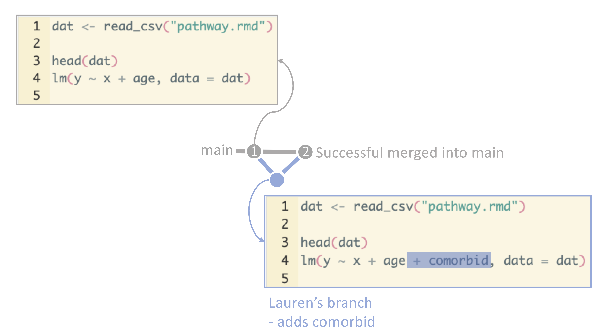
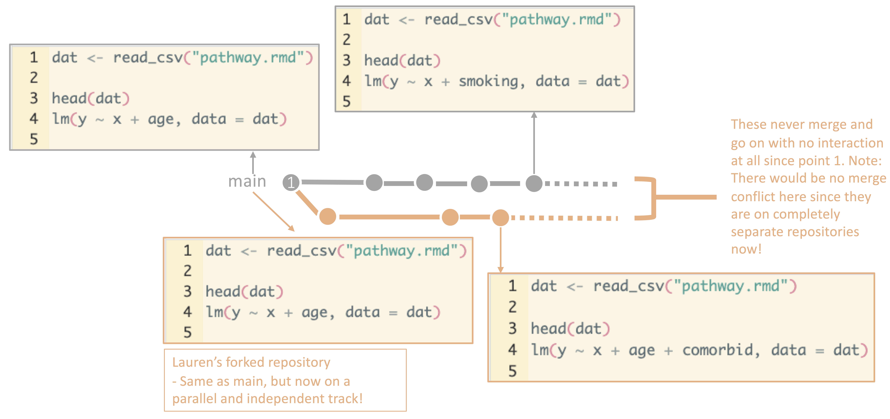

11 Assorted Git processes and tips
This page introduces a few Git and GitHub processes that didn’t nicely fold into the other chapters, but which we think make be useful to you
11.1 Forking
Remember when we went through branching? Branching is the process of creating a new branch where you can make changes to code separately from the main branch. When you finish your changes, you merge your branch into main and delete the branch. Branching is a critical tool for working with Git repositories and ensuring that the main branch remains functional and clean. Even if you do not merge your branch back in, the owner of the repository can see your branch on GitHub, take a look at what you have done, and foster collaboration with the members of the repository.
Branching: 
Forking is a similar process, but it is used when you want to build off of someone else’s repository. When you fork a repository, you create a copy of the repository in your GitHub account. You can then make changes to the repository in your account without affecting the original repository. The owner of the original repository will not be a member of your forked repository. The forked repository is essentially your repository now. You can think about this as similar to receiving a Google folder, downloading its contents, and saving it to your computer. The original Google folder is still there, the people with ownership and access to the original Google folder are unaffected, but now you have a completely separate folder on your computer that is not a collaboration with the original Google folder team in any way.
Why fork? Forking is a great way to contribute to open-source projects or to change a repository that you don’t have “write” access to. Forking also circumvents reinventing the wheel – perhaps your colleagues developed a suite of functions for cleaning malaria data, and you need similar functions for your dengue project. You can fork their repository, make changes to tailor these functions to dengue, and use their functions in your project.
Forking: 
Forking is core to the premise of Git and the effort to move towards open-source software development. It allows for collaboration within workplaces, disciplines, and around the world for the sharing of code and ideas.
11.2 Ignoring files
When you are working on a project, you will often have files that you do not want to track with Git. Such files, such as restricted datasets and large datasets, were discussed in the “What to track on Git and GitHub” chapter.
Decisions around data storage are a team decision and may require input from your information technology department or institutional review board. If permitted according to the data’s level of security, some teams will store some data on Git in a private repository, while other teams will use shared drives for data storage and Git/GitHub for code sharing, and, finally, other teams will store the data in their Git repository but not push them to GitHub.
About that last one – yes, you can store files in your GitHub folder but never
choose to track them. To do this, use a .gitignore file to tell Git to ignore
these files.
A .gitignore file is a list of files that Git is instructed not to track.
Whenever you add files in your repository, for example, Git will ignore the
files listed in your .gitignore file.
Here’s an example of the contents of a .gitignore file:
This .gitignore file instructs Git to ignore any files that end with .sql or .sqlite, as
well as any files in the build subfolder. Git ignore files are handy if
you have a workflow where you store most of a project’s files within the Git
repository, since it allows you to specify which files to ignore. Git ignore
files are less useful if you have a workflow
where you want everything in your repository to be pushed to GitHub.
11.3 Rolling back changes
Another advantages of Git and GitHub is the ability to roll back changes.
Perhaps you committed a few iterations of code and realized that
the code you wrote three commits ago was, in hindsight, the best version. No worries – you can roll
back to that commit and start from there. This is a great way to experiment with
code and try new things without worrying about losing your work. To do this, you
can either use git checkout to check out a previous commit, or you can use
git revert to revert a commit. This process is a bit complicated, but there is
a great walk through here.
11.4 And if all else fails…
Remember that Git is a tool that can help you track versions, examine changes, and collaborate with others. If you get stuck, never forget that its okay to delete your repository and start over - both of these website’s co-author have done this (repeatedly… even while creating this website).
There are many comics and memes about Git and the struggles that come with it– include the acceptability of burning down your repository and starting over!
Remember that you are not alone in your struggles and that there are many resources available to help you. It is ALWAYS okay to just save your code elsewhere for a moment and start over.